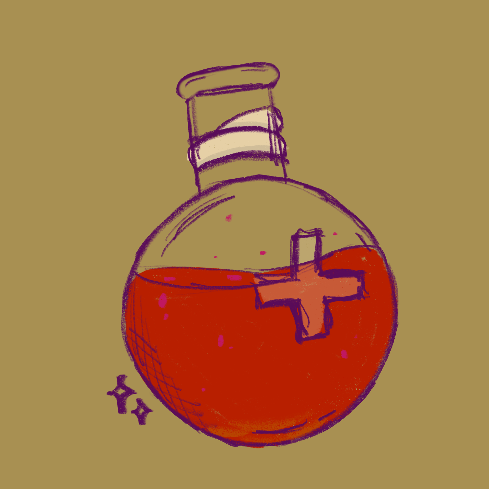
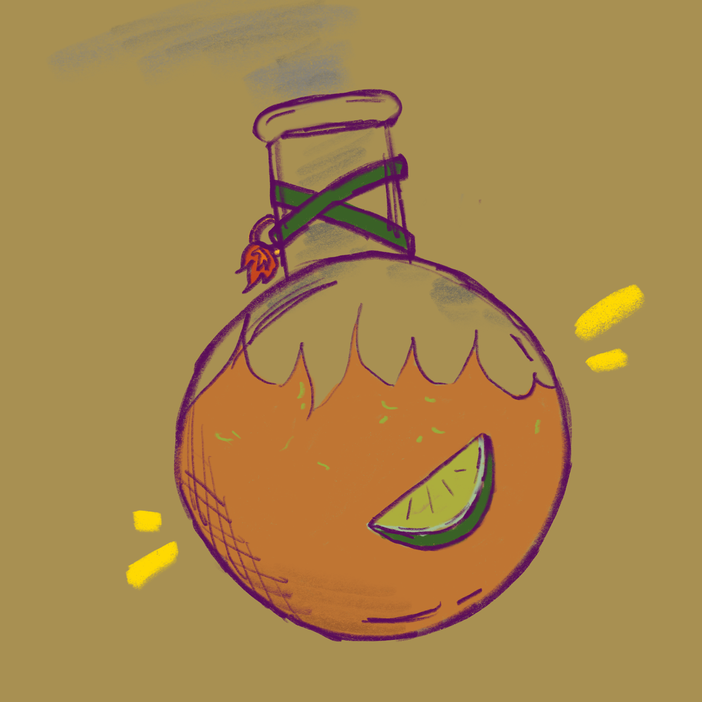
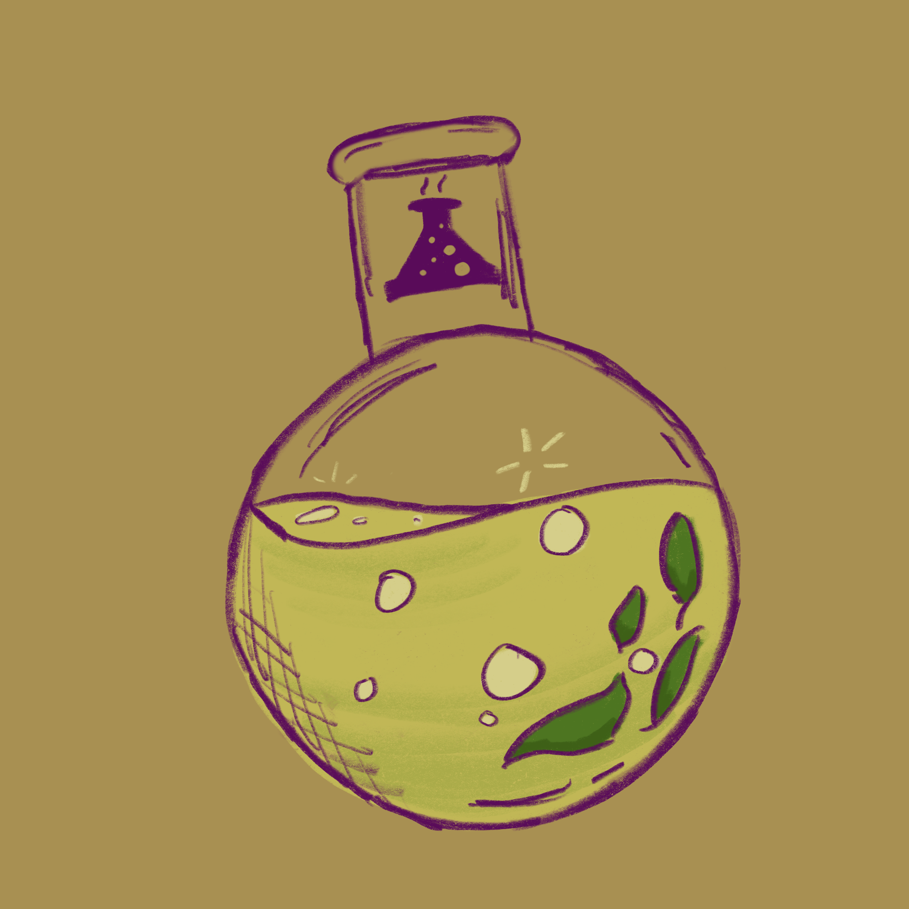
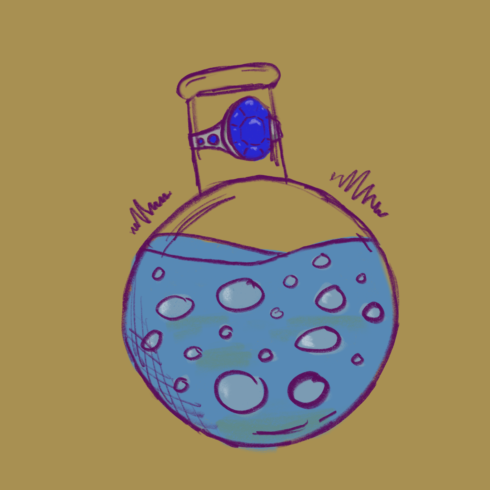
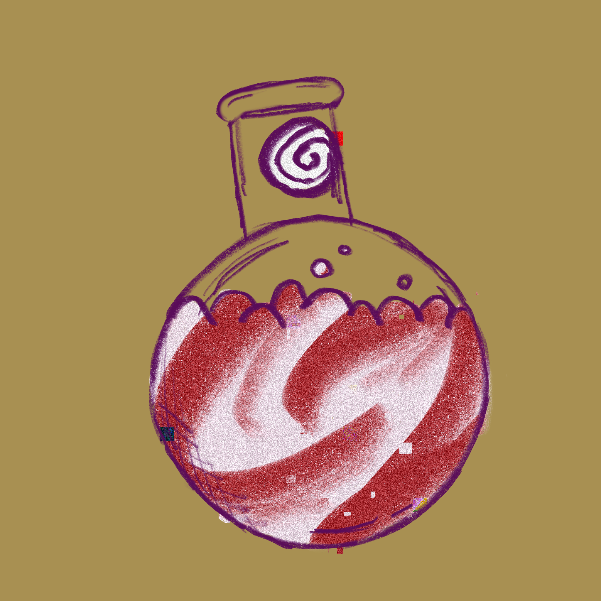

Magical Brews
For the joy of the modern wizard, here I've listed a couple of potions necessary for a magician to have in their arsenal. From health and mana replenishers to more offensive brews, these potions are all worth the bookmark. Remember to follow to provided links for exact measurements, and proper crediting.
(For the non-magical among us, I want disclaim that I cannot guarantee the supposed magical properties of each of these potions without ingredients such as spider eyes and healing magic. However, I can irrespectively vouch for thier taste!)
Hearty Healing Elixir -- A fragrant and fruity mixture, this potion is sure to help with any troll-inflicted tears or fireball singes.
This recipe is simple: Mix berry syrup and sparkling cider, add ice, top with sparkling water and a touch of healing magic, and your potion is crisp and ready to be guzzled!
Firebreath Brew -- Conquer ice enemies a plenty with this sharp-on-the-tongue potion for breathing like a famed dragon!
Combine a 1:2 ratio of mango to lime juice in a potion flask over ice, top with ginger beer (not ginger ale!) and dragon-essence, and consume to warm you (and your foes) from the inside out!
Acid Splash -- A necessary brew when fighting acid-spitting beasts, this poition will protect from biting vitrol aplenty.
This resistance potion is a little more complex: Add mint leaves and lime wedges and muddle until its flavor is realease, then add lime juice, agave, a spider eye, and ice and stir until frost develops.
Bubbling Mana Potion -- An everyday beverage for any level of witch or wizard! This potion will rejuvinate your spell capabilities, allowing you to cast more magic whenever and whereever you so please!
Oh, yes, this worthwhile potion contains a myriad of magical ingredients. Combine a 3:2 ratio of Polar Blast Hawaiian Punch and white cranberry juice into a potion flask or martini glass, then fill to the brim with the mana-inducing flavor of 7-up. And voilà!
Hypnotic Hooch -- A more nefarious spell; this hyponosis potion will truly "mesmerize" any guests who consume it.
Combine in a blender starwberries, water, juice of lime, honey, and a meager pinch of salt. Combine coconut milk, strawberry daquiri mix, and charm-spell essence, then add the blended mix to create a swirled, suspicious brew.




